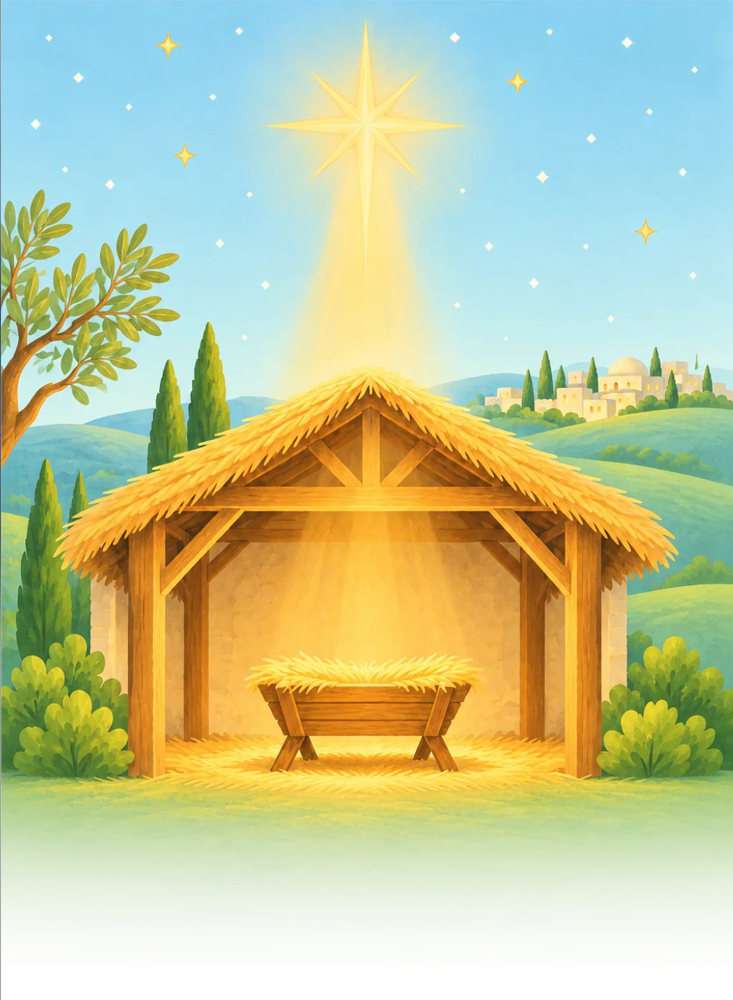
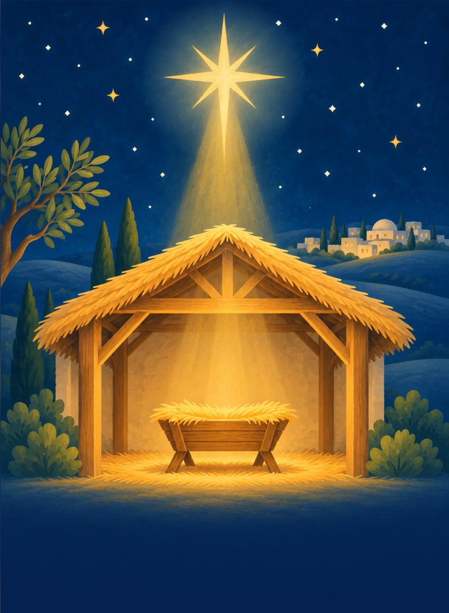
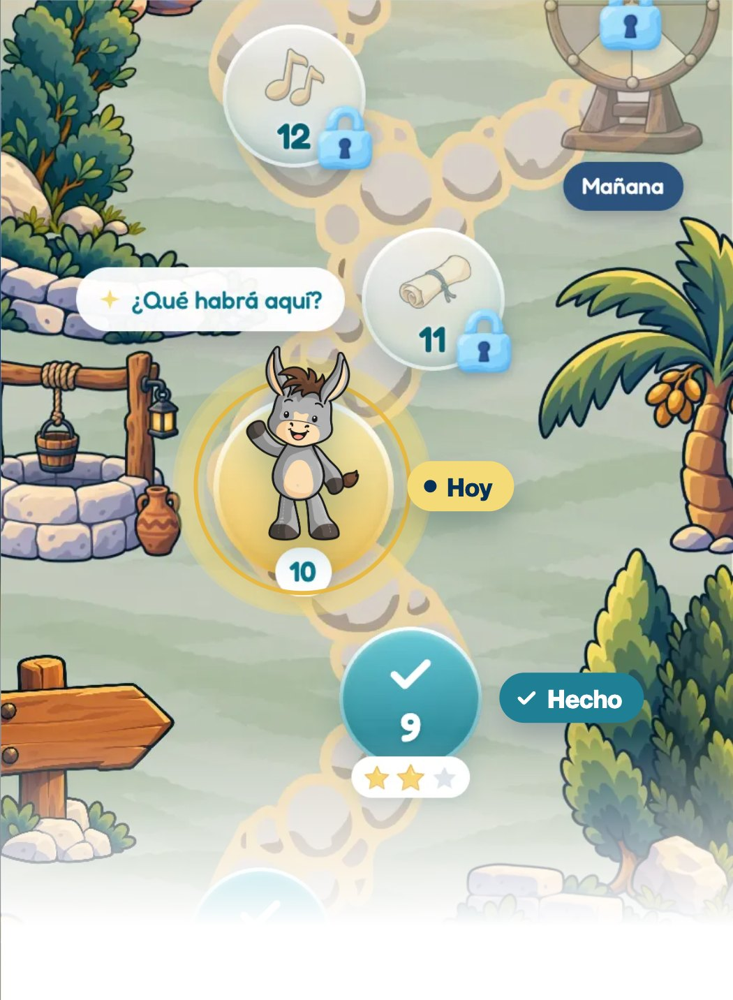
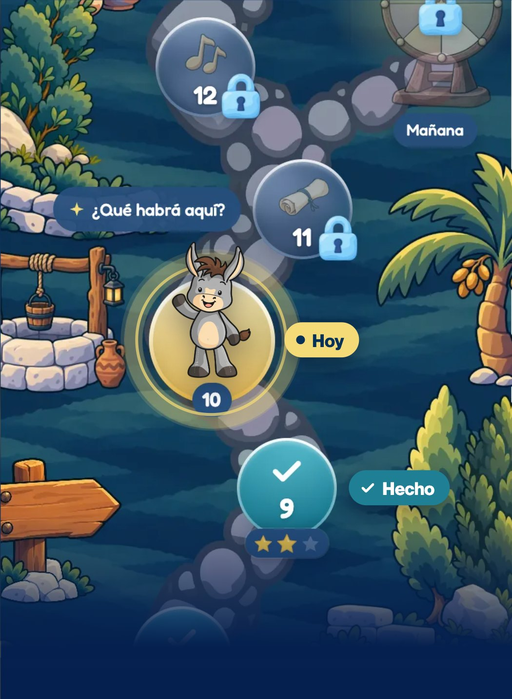
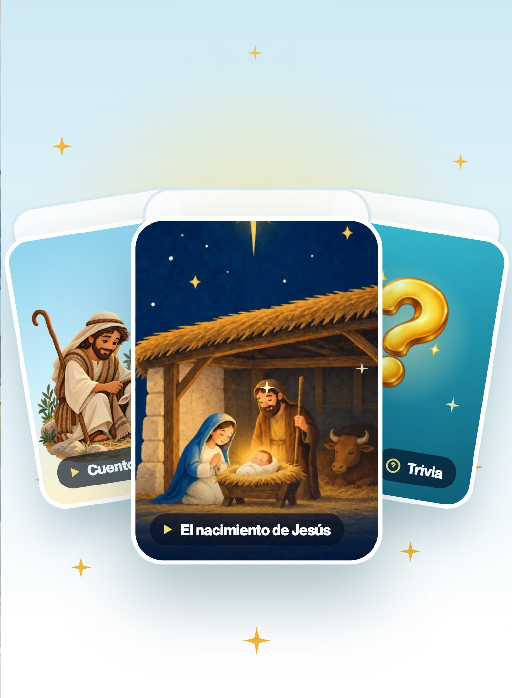
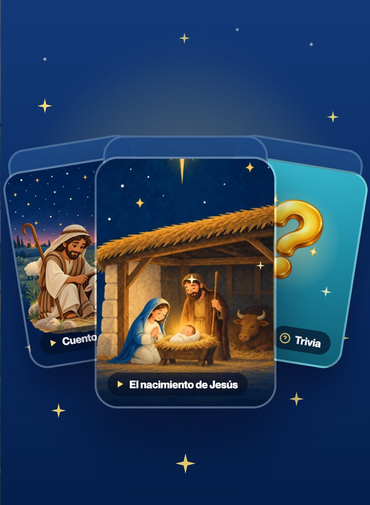
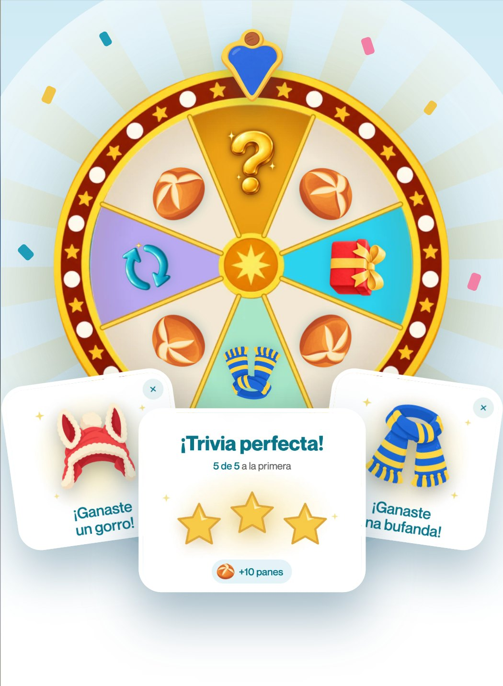
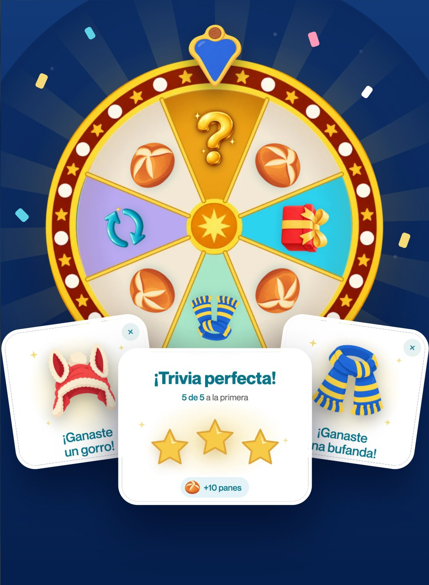

Preparemos juntos el corazón para recibirlo en Navidad.


26 días, un paso nuevo cada día junto a Teodoro hasta el pesebre.


Historias de la Biblia, trivias, juegos, canciones y una misión de amor al día.


Completa cada día, gira y gana estrellas, panes para Teodoro y sorpresas.